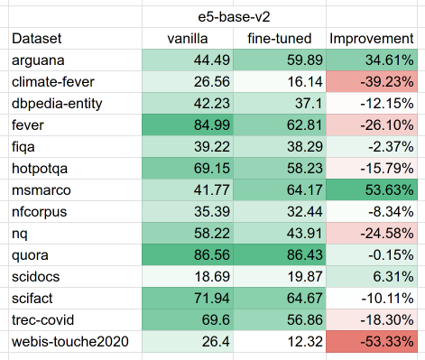

Why you should not
fine-tune on synthetic data
MLCon Berlin 2024 | Roman Grebennikov
whoami
🔎
- PhD in CS, quant trading, credit scoring
- Findify: e-commerce search, personalization
- Delivery Hero: food search, LLMs
- Opensource: Metarank, lightgbm4j, Nixiesearch
Agenda
- Fine-tuning with no training data?
- Domain adaptation in search
- Teaching your model to 说 إنجليزي
Nixiesearch
A stateless search search engine
- Runs over S3 block storage
- Domain adaptation: fine-tunes to your data

Industry goes stateless
- Uber: Lucene: Uber’s Search Platform Version Upgrade [1]
- Doordash: Introducing DoorDash’s in-house search engine [2]
- Amazon: E-Commerce search at scale on Apache Lucene [3]

[1]: https://www.uber.com/en-NL/blog/lucene-version-upgrade/ [2]: https://careers.doordash.com/blog/introducing-doordashs-in-house-search-engine/ [3]: https://www.youtube.com/watch?v=EkkzSLstSAE
Domain adaptation
Different search engines, same embedding, same bad search results
Got bad lexical search results?

- Build a set of ground-truth labels
- Tinker with a search until NDCG@10 goes up
- PROFIT
Got bad embedding search results?
Nothing to tinker with ðŸ«
Fine-tuning?

- Document corpus
- Queries
- Positive and negative labels
Fine-tuning reality check
- Docs+queries+positives: mine negatives
- Docs+queries: mine negatives, generate labels
- Docs: generate queries+labels, mine negatives
Is it even doable?
Too many synthetic things at once!
- Query generation - ðŸ«
- Label generation - ðŸ«
- Negative mining - 😺
docTTTTTquery
github.com/castorini/docTTTTTquery
from transformers import T5Tokenizer, T5ForConditionalGeneration
model_id = 'castorini/doc2query-t5-base-msmarco'
tokenizer = T5Tokenizer.from_pretrained(model_id)
model = T5ForConditionalGeneration.from_pretrained(model_id)
doc_text = 'The presence of communication amid scientific minds was '
'equally important to the success of the Manhattan Project'
'as scientific intellect was. The only cloud hanging over '
'the impressive achievement of the atomic researchers and '
'engineers is what their success truly meant; hundreds '
'of thousands of innocent lives obliterated.'
input_ids = tokenizer.encode(doc_text, return_tensors='pt')
outputs = model.generate(input_ids, num_return_sequences=3)
sample 1: why was the manhattan project successful
sample 2: the manhattan project what it means
sample 3: what was the most important aspect of the manhattan project
docTTTTTquery TLDR
- Small T5 seq2seq model
- Trained on query generation task
- MSMARCO dataset:
500k document-query pairs from Bing
doc2query reality check
doc_text = "MLcon provides a focused, specialized learning environment "
"dedicated to Machine Learning, enabling attendees to explore the "
"latest trends, tools, and best practices with guidance from "
"international experts. Our events are designed to help professionals "
"elevate their skills, enhance their products, and improve effectiveness."
sample 1: what is mlcon
sample 2: what is mlcon?
sample 3: what is mlcon?
sample 4: what is mlcon?
sample 5: what is mlcon
sample 6: what is mlcon
sample 7: what is mlcon
sample 8: what is mlcon
sample 9: what is mlcon
sample 10: what is mlcon?
doc2query issues
- T5 small: small, old and not smart
- Only good on Bing search results
- Very narrow query types: "what is XXX?"
Ok, what about modern LLMs?
Modern LLMs for data generation
- Fine-tune a-la docTTTTTquery
- Prompt engineering: open-source LLMs
- Prompt engineering: commercial LLMs
Attempt #1: let's fine-tune!
Premise:
- t5 small? - Let's pick bigger model, Mistral-7B
- too narrow queries? - diverse mix of doc+query pairs
- same query types? - let's have short/long/question modifiers
nixie-querygen-v3
generated query example
{
"doc": "Hey guys. I am a Programmer Analyst Trainee at Cognizant "
"Technology Solutions in the Advanced Java Domain. I joined Cognizant"
"on 24th Dec 2015. I got an offer from Oracle Financial Services"
"Software too as Associate Consutant. Should i join the latter or "
"not. I am really confused pls i need a definitive direction to think. "
"I feel coz i got a good domain (Advanced Java) in cognizant and i am "
"quite good at Java programming i should not leave cognizant coz "
"i am not sure what domain OFSS might put me in.",
"query": "should i join ofss or cognizent?"
}
Looks good, let's see the metrics!
BEIR: Evaluating search
- BEIR: a set of 14 datasets with relevance labels
- Diverse topics: wiki, med, Q&A, finance, web
- Diverse doc/query lengths: from short to long
First results

Not impressive 💀 but why?
Hypotheses why it worked bad
- e5-base-v2 is not zero-shot: uses train splits from BEIR
- Too much noise in training data: less datasets, more quality
- Generation quality is so-so: too typical queries
Disclaimer: does not mean that this approach is broken
Generated query examples
"Should bottled water be banned?"
"Should the government allow illegal immigrants to become citizens?"
"Should more gun control laws be enacted?"
"Should adults have the right to carry a concealed handgun?"
"Should the voting age be lowered?"
"Should any vaccines be required for children?"
"Should gay marriage be legal?"
"Should performance-enhancing drugs be accepted in sports?"
"Does lowering the federal corporate income tax rate create jobs?"
"Should prostitution be legal?"
"Should any vaccines be required for children?"
"Should recreational marijuana be legal?"
"Should the federal minimum wage be increased?"
"Should people become vegetarian?"
Why does it always start with "should?" 🤔
Attempt #2: prompt engineering
- pro: different query types
- pro: iteration time low, just change the LLM
- con: prompt engineering is magic
The plan
- Multiple LLM sizes: Qwen2.5 7B and 32B
- Pre-MTEB embedding model: all-MiniLM-L6-v2
- NanoBEIR instead of BEIR: too slow :(
- 5k docs, 1 query per doc
- OpenAI too expensive :( ~ $500
query_prompt = [
"You are a search quality rater evaluating the relevance of web pages. "
"Given a document, provide a single search query in a form of a question, "
"which can be used to match this document in a search engine. "
"The document should be highly relevant for the query, "
"and directly contain the answer for the query. "
"Query should be a short English question, descriptive, and consider "
"the underlying intent of the query regarding the document. "
"Output only the query, without any extra text surrounding it. "
]
It was done before!
GPL: Generative Pseudo Labeling for Unsupervised Domain Adaptation of Dense Retrieval
[1]: K.Wang et al, https://arxiv.org/abs/2112.07577
Example queries: Qwen2.5-7B
"What is the prevalence of vitamin D insufficiency in a general adult population?"
"How many polygons were used to approximate the surface of a face for realistic computer-generated animation?"
"What are the current challenges in key distribution for cryptography?"
"microcontroller based smart helmet using gsm and gprs"
"PID control methods for networked control systems with time delay and packet loss"
"comparison of clustering methods for cancer gene expression data"
"What is Zero-Knowledge Contingent Payment in cryptocurrencies?"
"categorical equational systems and term equational systems introduction"
"interactive recommender system for clinical pathways and personalized care"
"what are the key points of 5g architecture discussed in the ngnm alliance paper"
"what is pfinder and how does it work"
"syntactic simplification process and techniques"
"What is the impact of revisits on content popularity?"
"ble beacon based patient tracking system in smart care facilities"
No more "shoud" "should" "should" - nice!
What about BEIR score?
Results: at least now we're not worse than before
What about 32B model?
Results: OK better, but still not good
Problem 1: Query format mismatch
doc: As a general rule, you must choose between a mileage deduction
or an actual expenses deduction. The idea is that the mileage deduction
is supposed to cover all costs of using the car. Exceptions include
parking fees and tolls, which can be deducted separately under either
method. You explicitly cannot deduct insurance costs if you claim a
mileage deduction. Separately, you probably won't be able to deduct
the deductible for your car as a casualty loss. You first subtract
$100 from the deductible and then divide it by your Adjusted Gross
Income (AGI) from your tax return.
- beir: Business Expense - Car Insurance Deductible For Accident That Occurred During a Business Trip
- qwen7: What are the rules for deducting car insurance costs on taxes?
- qwen32: can you deduct car insurance on taxes if you take the standard mileage deduction
problem 2: not enough data?
- Dataset size: ArguAna is only 1800 docs
- Query diversity: mismatch between query styles
Are we reinventing the wheel?
EGG: Efficient Generalized Generator
The plan
- 7 queries per doc: question, claim, argument, summary, ...
- 5k -> 50k random documents
- Only Qwen2.5 7B - 96 hours on 2x 4090
Query types
- Question: can you deduct car insurance on taxes if you take ...?
- Google: can you deduct car insurance on taxes
- Claim: You cannot deduct insurance costs if you claim ...
- Title: Can You Deduct Car Insurance On Your Taxes?
- Entity: car deduction
- Summary: This document discusses rules for car expense ...
- Argument: ... difficulty of deducting car insurance deductibles ...
Results
Sometimes up, sometimes down, wtf?
Loss trajectory
"how to scare data scientist with a single graph"
Open questions & next steps
- Training setup: why loss goes up?
- Impact of query types: more diverse != better?
- Better+bigger models: 300M and 500M models?
Bonus: language adaptation
problem: your ML model is good at English, but bad at German
Idea
- Fine-tuning on machine-translated data
- mMARCO: used Google Translate to convert to 10+ languages
Machine translation: Arabic
- AllNLI translated to Arabic
- MTEB #1 with tiny 125M model!
Machine translation: Uzbek+Kazakh
Case: evaluate embedding accuracy on low-resource languages
- Google Translate the MIRACL dataset for uz/kk
- Run the MTEB evaluation
Learnings
- Synthetic data ~= distillation of large LLM
- Small models are sensitive to noise: might not work
- Language adaptation: many success stories in the wild